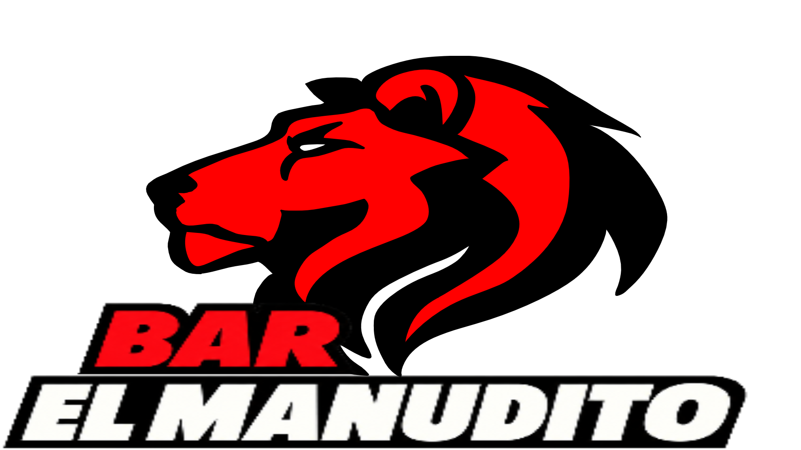

ALAJUELA, COSTA RICA PASIÓN ROJINEGRA
BAR EL MANUDITO
Un punto de encuentro para vivir el fútbol, compartir con amigos y celebrar cada jugada con sabor rojinegro.
- Fútbol
- Amigos
- Tradición

Aquí se celebra cada jugada.
AGENDA ROJINEGRA
Cada fecha tiene su historia
Navegá por el calendario y seleccioná una actividad para ver sus detalles.
ÚLTIMOS 30 DÍAS
Resultados de Primera División
Marcadores, escudos y estadio de los encuentros más recientes.
NUESTRA HISTORIA
Un bar hecho para la afición
En cada rincón del mundo, los bares futboleros son templos donde la pasión se sirve en vaso frío y la historia se canta a coro.
Desde el Shenanigans en Liverpool, donde se respira el rojo de los Reds, hasta La Taverna en Barcelona, hogar de noches azulgranas, estos espacios son más que bares: son comunidades vivas. En Buenos Aires, El Banderín late con cada gol argentino; en Milán, el 442 Sports Pub une rivales bajo un mismo techo.
En Costa Rica, el corazón late fuerte en El Manudito, en Alajuela. Allí, la hinchada de Liga Deportiva Alajuelense convierte cada partido en una fiesta rojinegra. Entre cánticos, banderas y bocas abiertas por el gol, se mezclan los sabores locales: chifrijo, casados y cerveza. Es el lugar donde la historia del León se escribe entre brindis y abrazos, donde la victoria sabe a comunidad y la derrota, a esperanza compartida.
Como el 1905 Restó de Boca Juniors o el Salón Corona de CDMX, El Manudito encarna la esencia del fútbol: un espacio donde se cruzan el deporte, la comida y la cultura popular.
“En cada bar futbolero, el verdadero protagonista es la hinchada.
DESDE LA GRADERÍA
Momentos del Manudito
Muy pronto, este espacio reunirá fotografías del ambiente, la barra y las noches de partido.